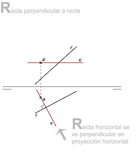
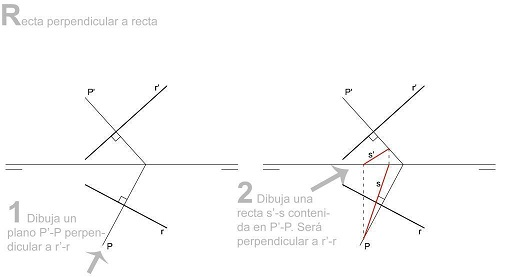
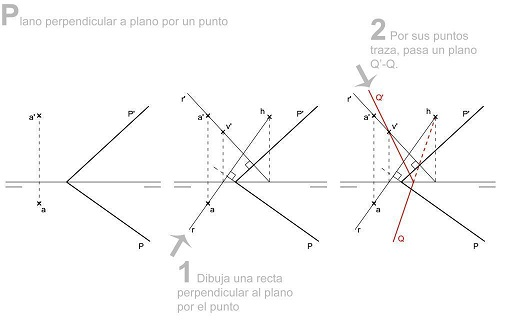
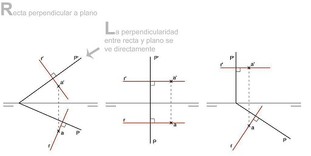
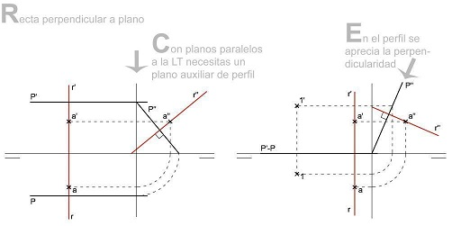

Perpendicularidad Recta-Recta
Dos rectas que son perpendiculares en el espacio, en general, no tienen sus proyecciones homónimas perpendiculares.
Únicamente se ven perpendiculares cuando una de las rectas es paralela a uno de los planos de proyección,por lo tanto,
las proyecciones de ambas rectas sobre este plano serán perpendiculares.
Para combrobar si dos rectas son perpendiculares entre sí, se ha de incluir una de ellas en un plano que sea perpendicular a la otra.
Dos rectas perpendiculares no tienen por qué cortarse para serlo.


Perpendicularidad Plano-Plano
Dos planos son perpendiculares entre sí cuando uno de ellos contiene una recta perpendicular al otro.
Sus trazas no tienen que ser necesariamente perpendiculares.
Dado un plano, existen infinitos planos que contienen a una recta perpendicular al dado y que serán perpendiculares a este.

Perpendicularidad Recta-Plano
Una recta es perpendicular a un plano cuando sus proyecciones son perpendiculares a las trazas del plano.
En diédrico un plano y una recta se ven perpendiculares, es decir, las proyecciones verticales de las rectas forman 90 grados con las trazas verticales de los planos,
y semejante en las proyecciones y trazas horizontales.

Excepción
Los planos paralelos a la Línea de Tierra y los planos que contienen a la Línea de Tierra, requieren del plano de perfil para ver la perpendicularidad.
